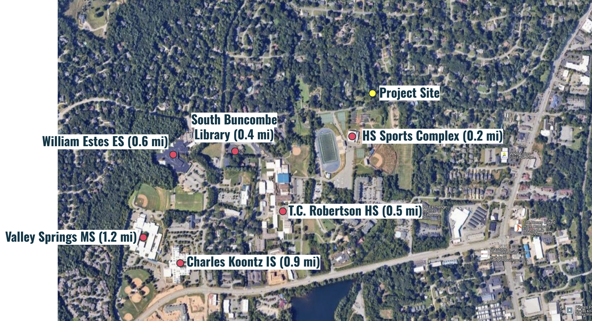

Letter to Asheville City Council in Support of 93 & 95 Springside Road
July 24, 2025 Updated: July 29, 2025
July 29th UPDATE: The public hearing for this development has been continued to the end of August.
You can find more information about the development in the city staff report from the May Planning and Zoning Commission meeting here, and the city staff slides from the same meeting here (pp.6-27).
Asheville For All sent the following letter to Asheville City Council ahead of the council’s July 29th meeting.
* * *
Dear Asheville City Councilors,
We are writing to offer support for the conditional zoning at 93 & 95 Springside Road on the council’s July 29th agenda.
This is a small number of infill homes. Nonetheless, it’s the addition of infill homes like this, spread throughout the city—and in combination with more ambitious land use reforms—that is what’s needed in order to help make a difference in Asheville’s housing shortage.1
This is not a dense development, and its configuration is fully compatible with the city’s Future Land Use Map. Its impact on traffic will likely be inconsequential.
What troubles us the most about opposition to these new homes is that anyone would want to prevent new families from joining a community that is so close to multiple public schools. We understand that existing residents are concerned about traffic during school hours. But it is shortsighted to believe that pushing families further out is the solution. Preventing families from living near schools will only add to traffic, create more lengthy drop-off/pick-up lines, and raise the county’s costs for school bus service.

It will also rob children of the potential experience of being able to visit their schools, and the friends they make there, without having to be driven around. And it will rob existing families of the chance to experience a more vibrant neighborhood for young people. Studies have shown that schools strengthen a “sense of place” for nearby households, and that students who can walk or bike to school perform better academically.
In short, allowing infill homes near schools is a prerequisite for our city to act on its values of equity and inclusion.
Undoubtedly, the streets between these schools and the proposed new homes may be considered less than “complete streets.” This is no reason to foreclose the idea that we can make pedestrian improvements in the future. What will help is a critical mass of families within walking distance of these schools. (In fact, in West Asheville we’ve seen that having families near schools has led to the creation of a “bike bus,” where children can safely get to school together.)
We cannot build our way out of the housing shortage without building near schools. In fact, we know that allowing more housing near and in high-amenity, high-opportunity neighborhoods is a more equitable means to solve our housing crisis, rather than only allowing homes on the urban periphery, or where neighborhood opposition is less likely to appear. And public schools are undoubtedly one such amenity that makes a difference in outcomes for children and families.
Thank you as always for your careful consideration, and for all that you do.
Asheville For All Lead Organizers
-
On the need for more infill homes, see Asheville’s 2023 Missing Middle Housing Study. That study includes a “Displacement Risk Assessment” that highlights the need for broad housing growth—spread throughout the city, rather than concentrated in a few intensive corridors or regions—in order to promote the most equitable outcomes. Such a conclusion is affirmed by recent research: Phillips, 2022; Büchler and Lutz, 2024. ↩